“You'll build metrics, scalable data pipelines, dashboards, and reports to inform and run the business.”
1 of 9reviewed postings
stripe.com/jobs/search?gh_jid=8194291 · retrieved 2026-10-09 · fingerprint fnv1a-68604535-974
Lyceum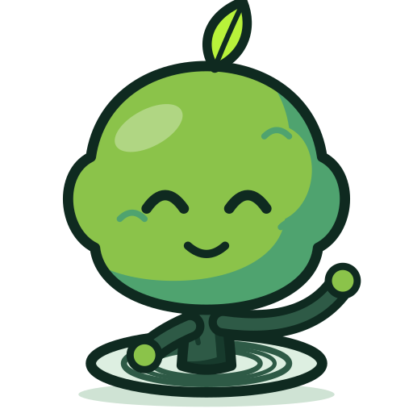
Stripe · Data Analyst, Intern · published 2026-10-01
“You'll build metrics, scalable data pipelines, dashboards, and reports to inform and run the business.”
stripe.com/jobs/search?gh_jid=8194291 · retrieved 2026-10-09 · fingerprint fnv1a-68604535-974
Who it lands on
Dr Aisyah is fictional. The review she faces is real.
Why now
12 to 18 months
39%
Different measures of different populations, so never one chart.
The plan
Seven helpers do the work. People decide.
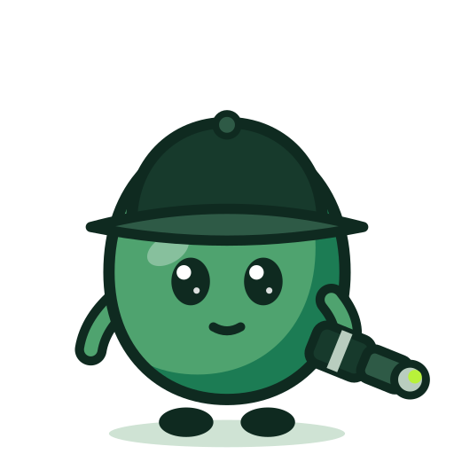
WatchScout fetches, on request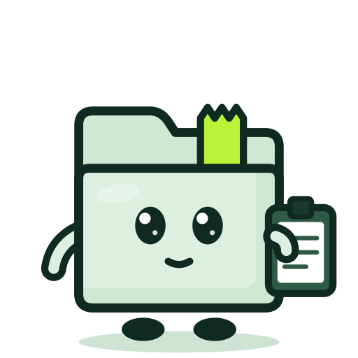
ReportSteward prepares the brief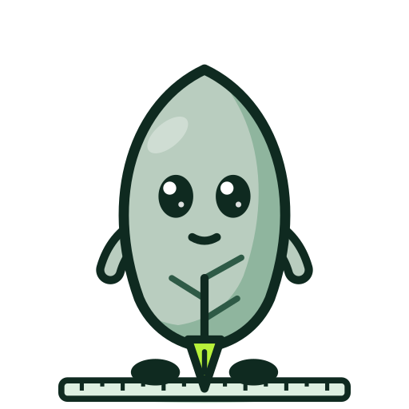
UpdateQuill checks the revision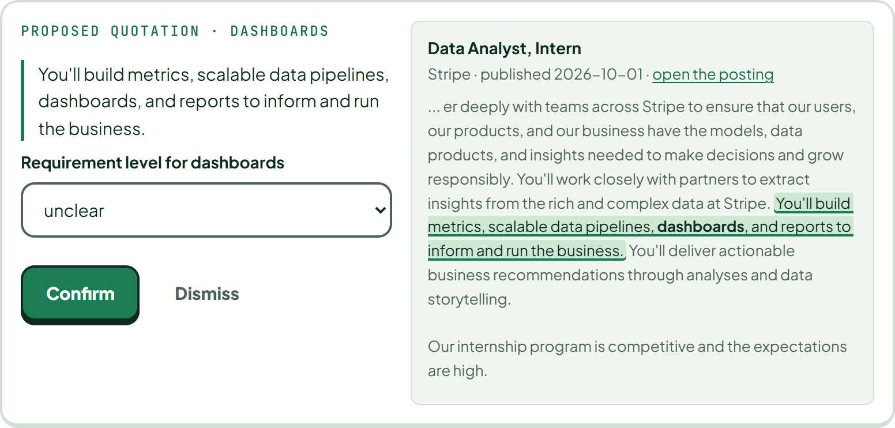
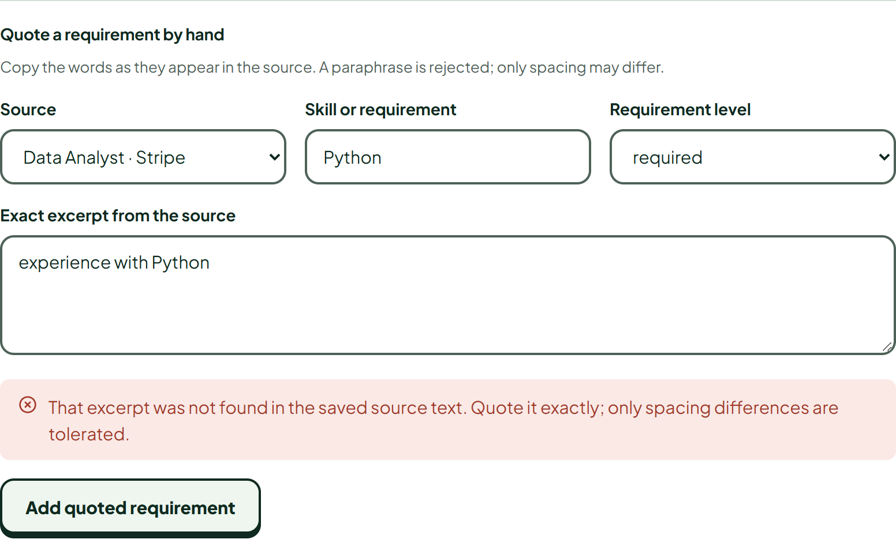
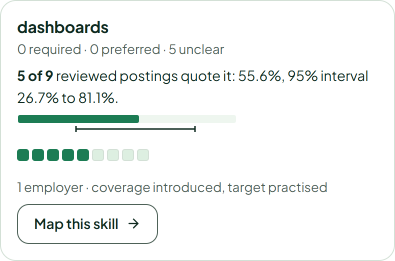
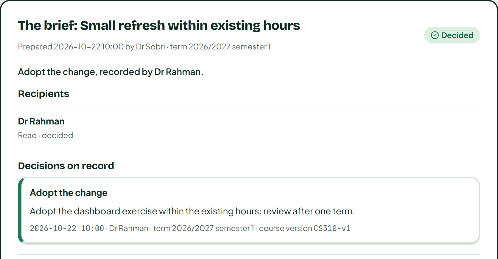
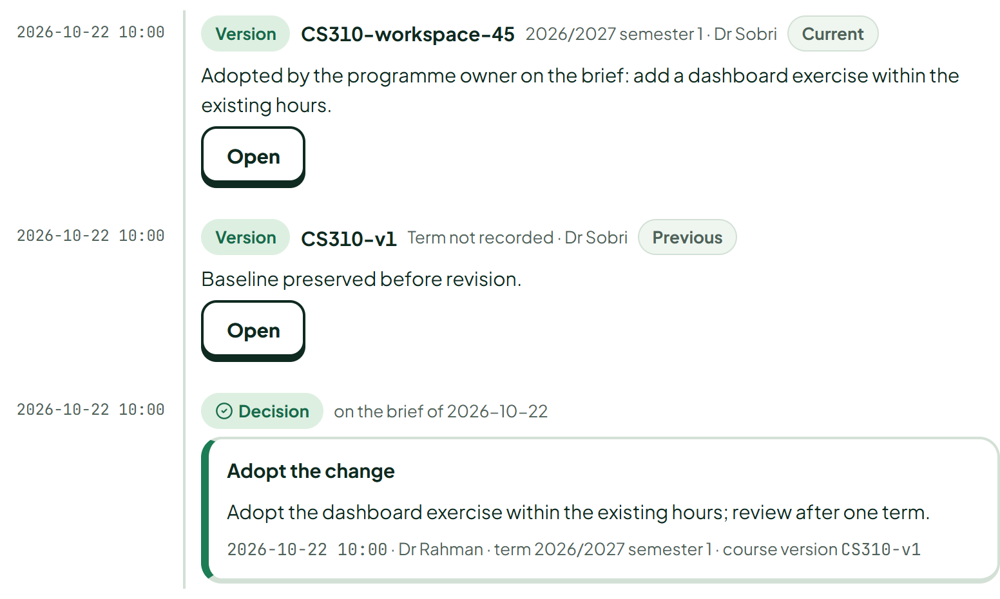
Formal approval stays in the university's own process; Lyceum keeps the decision that goes into it.
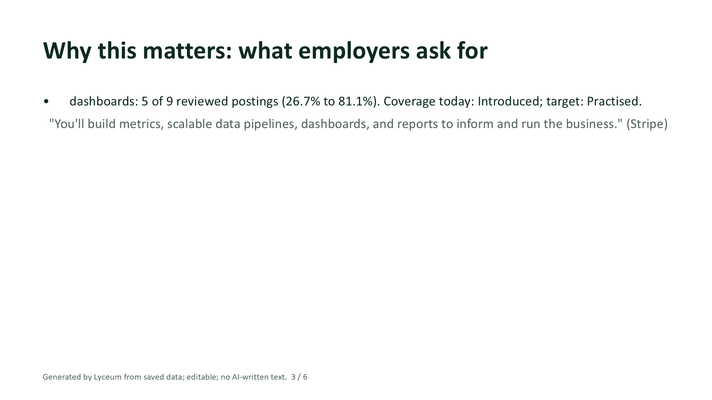
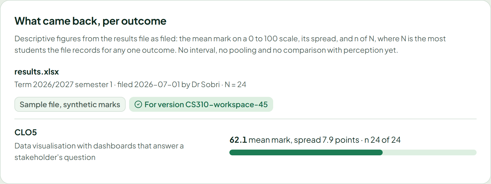
No learning gain is claimed; the benchmark has not been run.
The proof
Readiness, self-assessed
TRL 6
“Prototype implementations of the software demonstrated on full-scale realistic problems.”
NASA ESTO, software. Our relevant environment: real postings from a real public board, a sample course outline, a lecturer persona.
Checks
259
automated checks passed on 23 October 2026, plus four headless browser runs.
One dataset for everything: the dated sample of a real board, restored before every run.
Next level: one department, one term, inside its LMS.
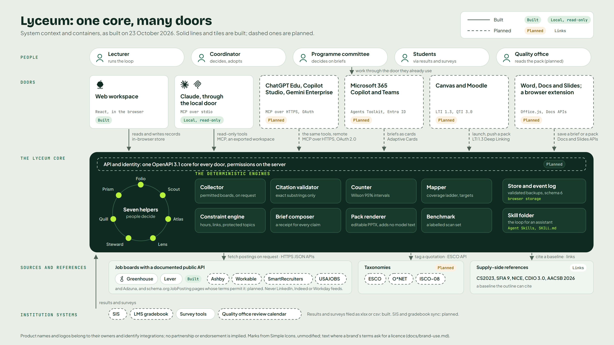
Why a department pays
Tenancy, audit, the office suite doors
Data agreements with the institution
Shared workspace, sign-in, the remote and LMS doors
The term's review pack, and support
One course, on one laptop, no account
The whole loop, every export, the local assistant door
Each step answers what reviewers already look for
the requirements of the stakeholders, especially the external stakeholders, are gathered
market needs and graduate employability analyses
for the periodic review of these program educational objectives
monitor and periodically review their programmes
the assessment tasks, are aligned to each other
systematically utilized as input for the program's continuous improvement actions
The ask
What the pilot measures
Lyceum turns real job postings into a course decision with receipts, every semester, inside the tools lecturers already use.
Every semester adds a ring.